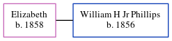

Elizabeth Phillips 1858 -
[ Home ] | [ Calendar ] | [ Surnames Index ] | [ Census Index ] | [ Family History ]Elizabeth, the wife of William H Jr Phillips (the great-great-uncle of Michele Copp (née Phillips)), was born in South Carolina in 18581. In 1880, she was living in Sumter, Sumter, South Carolina, USA1.
Citations
- 1880 United States Federal Census Online publication - Provo, UT, USA: The Generations Network, Inc., 2005. 1880 U.S. Census Index provided by The Church of Jesus Christ of Latter-day Saints © Copyright 1999 Intellectual Reserve, Inc. All rights reserved. All use is subject to the limite
Family Tree
Generated by ged2site. Last updated on Jun 6, 2024